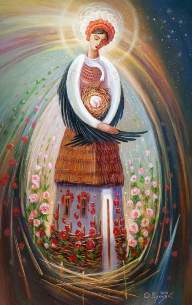

Корисні завдання
Запитання та завдання для роботи з дітьми за картиною Олега Шупляка
Що ви бачите на картині?
Звідки видно, що художник розповідає саме про Україну?
Які символи України ми можемо знайти на полотні художника? Як ви гадаєте, чому художник використав саме їх?
Роздивіться картину ще уважніше. Що вразило вас найбільше?
Розкажіть про нашу Батьківщину за картиною Олега Шупляка.
Прослухайте гімн України та обговоріть ваші враження.
Мультфільм “Твоя країна — Україна”
Запитання та завдання для обговорення мультфільму “Твоя країна — Україна”
Знайдіть на глобусі чи на карті Україну. Що допомогло це зробити?
Як ви орієнтувалися?
Порівняйте розмір України та інших країн Європи та світу. Як ви вважаєте, наша держава маленька чи велика? Поясність свою думку.
Які природні щедроти є в нашій країні? У вашому краї? Які з них ви бачили?
Чи мандрували ви Україною? Розкажіть, що з побаченого вам найбільше запам’яталося.
Мультфільм “Як козаки сіль купували”
Запитання та завдання для обговорення мультфільму “Як козаки сіль купували”
Навіщо козакам сіль? Чи могли вони обійтися без неї?
Де ми використовуємо сіль? Навіщо? Чи багато нам її потрібно? Чому?
Як ми дізнаємося, багато чи мало солі поклали у страву? Що робимо, якщо солі поклали забагато? (Проведіть відповідні досліди).
Дізнайтеся, звідки в давні часи привозили сіль. Чому їздили так далеко?
Чому раніше сіль була на вагу золота? Чи цінуємо ми так її зараз? Чому?
Завдання сприятиме усвідомленню себе громадянином/громадянкою України, ознайомить із культурою українського народу, допоможе розвинути логічне мислення, фантазію й уяву. Дітям пропонується розглянути карту країни й пофантазувати, на що чи на кого схожа ця карта: явище природи, предмет, тварину тощо. Також із картою потрібно з’єднати малюнки, що символізують або асоціюються з Україною, та розмалювати їх. У процесі виконання завдання дитина вчитиметься розповідати про Україну як про свою Батьківщину, розпізнавати державні й народні символи, шанобливо ставитися до них.
Природа України та країн світу (до с. 42 підручника)
Роздивляємося фотографії природних ландшафтів, показуємо розмаїття природи нашої країни